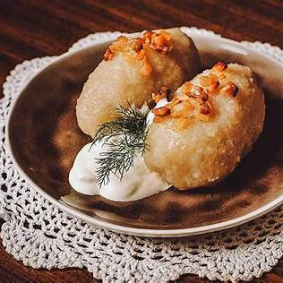
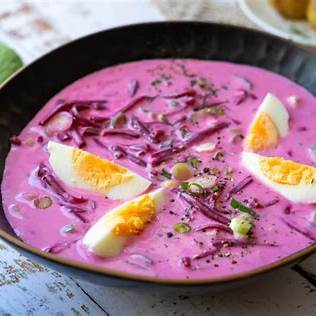
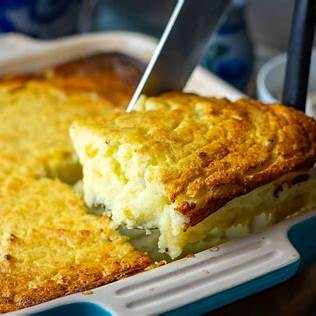

Lietuviška virtuvė pasižymi sotumu ir paprastais, vietiniais ingredientais. Populiariausi patiekalai – cepelinai, šaltibarščiai ir kugelis. Žemiau rasi trumpą pristatymą, nuotraukų galeriją, ingredientų lentelę bei kontaktų formą.
Keletas žinomų lietuviškų patiekalų:

Cepelinai

Šaltibarščiai

Kugelis
Nuotraukos iš Unsplash (švietimo tikslams tinkamos). Jei reikia – pakeiskite į vietinius failus img/foto1.jpg ir pan.
Šioje lentelėje – pagrindiniai tradicinio kugelio ingredientai ~4 porcijoms.
| Ingredientas | Kiekis |
|---|---|
| Bulvės | 1,5 kg |
| Kiaušiniai | 3 vnt. |
| Šoninė | 150 g |
| Svogūnas | 1 vnt. |
| Pienas arba grietinė | 200 ml |
| Druska, pipirai | pagal skonį |
Turite klausimų ar pasiūlymų apie lietuviškus patiekalus? Parašykite: